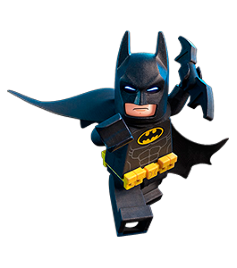

Batman operates in the fictional Gotham City with assistance from various supporting characters, including his butler Alfred, police commissioner Jim Gordon, and vigilante allies such as Robin. Unlike most superheroes, Batman does not possess any inhuman superpowers. He does, however, possess a genius-level intellect and is a peerless martial artist, and his vast wealth affords him an extraordinary arsenal of weaponry and equipment. A large assortment of villains make up Batman's rogues gallery, including his nemesis, the Joker.

Because Batman never skip leg day
Batman operates in the fictional Gotham City with assistance from various supporting characters, including his butler Alfred, police commissioner Jim Gordon, and vigilante allies such as Robin. Unlike most superheroes, Batman does not possess any inhuman superpowers. He does, however, possess a genius-level intellect and is a peerless martial artist, and his vast wealth affords him an extraordinary arsenal of weaponry and equipment. A large assortment of villains make up Batman's rogues gallery, including his nemesis, the Joker.
The One Man War on Crime
The fictional superhero Batman, who appears in American comic books published by DC Comics, has appeared in various films since his inception. Created by Bob Kane and Bill Finger, the character first starred in two serial films in the 1940s: Batman and Batman and Robin. The character also appeared in the 1966 film Batman, which was a feature film adaptation of the 1960s Batman TV series starring Adam West and Burt Ward, who also starred in the film. Toward the end of the 1980s, the Warner Bros. studio began producing a series of feature films starring Batman, beginning with the 1989 film Batman, directed by Tim Burton and starring Michael Keaton.
The Bat Cave
Bob Kane, who was on the movie set, mentioned this to Bill Finger who was going to be the initial scripter on the Batman daily newspaper strip. Finger included with his script a clipping from Popular Mechanics that featured a detailed cross section of underground hangars. Kane used this clipping as a guide, adding a study, crime lab, workshop, hangar and garage. This illustration appeared in the Batman "dailies" on October 29, 1943 in a strip entitled "The Bat Cave!"